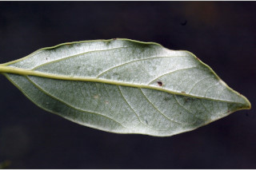
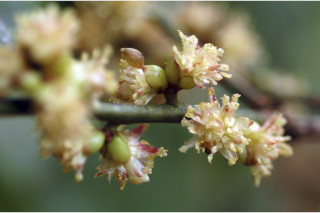
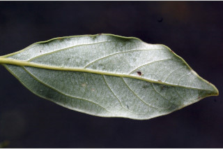
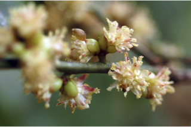

Trees up to 20 m tall.
20 ಮೀ.ವರೆವಿಗೆ ಬೆಳೆಯುವ ಮರಗಳು.
20 മീറ്റര് വരെ ഉയരമുളള മരങ്ങള്
மரங்கள் 20 மீ. உயரம் வரை வளரக்கூடியது.
Bark light brown, lenticellate; blaze light orange.
ತೊಗಟೆ ತೆಳು ಕಂದು ಬಣ್ಣದಲ್ಲಿದ್ದು ವಾಯುವಿನಿಮಯ ಬೆಂಡು ರಂಧ್ರ ಸಮೇತ -ವಾಗಿರುತ್ತವೆ;ಕಚ್ಚು ಮಾಡಿದ ಕಿತ್ತಳೆ ಬಣ್ಣ ಹೊಂದಿರುತ್ತದೆ.
ശ്വസനരന്ധ്രങ്ങളുളള, ഇളം തവിട്ട് നിറത്തിലുളള പുറംതൊലി; വെട്ട്പാടിന് ഓറഞ്ച് നിറം.
மரத்தின் பட்டை வெளிறிய ப்ரவுன் நிறமானது, லெண்டிசெல் கொண்டது; உள்பட்டை வெளிறிய ஆரஞ்சு நிறமானது.
Young branchlets subterete, glabrous.
ಎಳೆಯ ಕಿರುಕೊಂಬೆಗಳು ಉಪ-ದುಂಡಾಗಿದ್ದು ರೋಮರಹಿತವಾಗಿರುತ್ತವೆ.
അരോമിലമായ, ഏതാണ്ട് ഉരുണ്ട, ഇളം ഉപശാഖകള്.
சிறிய நுனிக்கிளைகள் குறுக்குவெட்டுத் தோற்றத்தில் வளையமானது, உரோமங்களற்றது.
Leaves simple, alternate, spiral, clustered at twig ends; petiole 1.2-2 cm long, planoconvex in cross section, glabrous; lamina 7-11 x 3-3.5 cm, elliptic to narrow elliptic, apex narrowly acute to acuminate, base attenuate, glaucous beneath, subcoriaceous; midrib raised above; trinerved just above the base with ca. 4 pairs of secondary_nerves; tertiary_nerves distantly reticulo-percurrent; higher order nerves closely reticulate.
ಎಲೆಗಳು ಸರಳವಾಗಿದ್ದು ಪರ್ಯಾಯ ಮತ್ತು ಸುತ್ತು ಜೋಡನಾ ವ್ಯವಸ್ಥೆಯಲ್ಲಿ ಇದ್ದು ಕುಡಿಕೊಂಬೆಗಳ ತುದಿಯಲ್ಲಿ ಗುಂಪಾಗಿರುತ್ತವೆ;ತೊಟ್ಟುಗಳು 1.2 - 2 ಸೆಂ.ಮೀ. ಉದ್ದ ಹೊಂದಿದ್ದು ಅಡ್ಡಸೀಳಿದಾಗ ಸಪಾಟ ಪೀನ ಮಧ್ಯದ ಕಾರದಲ್ಲಿರುತ್ತವೆ ಮತ್ತು ರೋಮರಹಿತವಾಗಿರುತ್ತವೆ; ಪತ್ರಗಳು 7- 11 X3 – 3.5 ಸೆಂ.ಮೀ.ವರೆಗಿನ ಗಾತ್ರ ಹೊಂದಿದ್ದು ಅಂಡವೃತ್ತದಿಂದ ಸಂಕುಚಿತ ಅಂಡವೃತ್ತದ ಆಕಾರ ಹೊಂದಿರುತ್ತವೆ; ತುದಿ ಸಂಕುಚಿತ ಚೂಪಿನಿಂದ ಕ್ರಮೇಣ ಚೂಪಾಗುವ ಮಾದರಿಯಲ್ಲಿರುತ್ತದೆ; ಬುಡ ಒಳಬಾಗಿದ ರೀತಿಯಲ್ಲಿರುತ್ತದೆ;ಪತ್ರಗಳ ತಳಭಾಗ ಮಾಸಿದ ಬೂದು ಹಸಿರು ಬಣ್ಣ ಹೊಂದಿರುತ್ತದೆ; ಮೇಲ್ಮೈ ಉಪತೊಗಲನ್ನೋಲುವ ಮಾದರಿಯಲ್ಲಿರುತ್ತದೆ;ಮಧ್ಯನಾಳ ಪತ್ರದ ಬುಡದ ಸ್ವಲ್ಪ ಮೇಲೆ 3 ನಾಳಗಳು ಇದ್ದು ಅಂದಾಜು 4 ಎರಡನೇ ದರ್ಜೆಯ ನಾಳಗಳ ಸಮೇತವಿರುತ್ತವೆ; ಮೂರನೇ ದರ್ಜೆಯ ನಾಳಗಳು ಅಂತರ ಹೊಂದಿದ್ದು ಜಾಲಬಂಧ ನಾಳ ವಿನ್ಯಾಸದಲ್ಲಿದ್ದು ಎಲೆ ದಿಂಡಿಗೆ ಅಡ್ಡವಾಗಿ ಕೂಡುತ್ತವೆ;ಉನ್ನತ ದರ್ಜೆಯ ನಾಳಗಳು ಪತ್ರಗಳು ತೀರಾ ಸನಿಹವಾಗಿದ್ದು ಜಾಲಬಂಧ ನಾಳ ವಿನ್ಯಾಸ ಹೊಂದಿರುತ್ತವೆ.
ലഘുവായ ഇലകള്, ഏകാന്തരക്രമത്തില്, സര്പ്പിളമായി, തണ്ടിന്റെ അറ്റത്ത് കൂട്ടമായടുക്കിയതാണ്; ഛേദത്തില് ഒരുഭാഗം പരന്നും മറുഭാഗം ഉരുണ്ടുമിരിക്കുന്ന ഘടനയുളള, അരോമിലമായ ഇലഞെട്ടിന് 1.2 സെ.മീ തൊട്ട് 2 സെ.മീ വരെ നീളം; പത്രഫലകത്തിന് 7 സെ.മീ മുതല് 11 സെ.മീ വരെ നീളവും 3 സെ.മീ മുതല് 3.5 സെ.മീ വരെ വീതിയും, ആകൃതി ദീര്ഘവൃത്താകാരം തൊട്ട് വീതികുറഞ്ഞ ദീര്ഘവൃത്താകാരം വരെയാണ്, പത്രാഗ്രം വീതികുറഞ്ഞ നിശിതാഗ്രം തൊട്ട് ദീര്ഘാഗ്രം വരെയാകാം, പത്രാധാരം നേര്ത്തവസാനിക്കുന്നതാണ്, കീഴെ നീലരാശി കലര്ന്നതാണ്, ഉപചര്മ്മില പ്രകൃതം; മുഖ്യസിര മുകളില് ഉയര്ന്നതാണ്; ആധാരത്തിന് തൊട്ട് മുകളിലായി മൂന്നു ഞരമ്പുകളുളളതാണ്, ഏതാണ്ട് 4 ജോഡി ദ്വിതീയ ഞരമ്പുകള്, ത്രിതീയ ഞരമ്പുകള് വിദൂര ജാലിത-പെര്കറന്റ് വിധത്തിലുളളതാണ്; മറ്റ് ചെറുഞരമ്പുകള് അടുത്ത ജാലിതമാണ്.
இலைகள் தனித்தவை, மாற்றுஅடுக்கமானவை, சுழல் போன்று அமைந்தவை, தண்டின் நுனியில் கூட்டமாக மற்றும் நெருக்கமாக அமைந்தவை; இலைக்காம்பு 1.2-2 செ.மீ., நீளமானது, குறுக்குவெட்டுத் தோற்றத்தில் பிளேனோகான்வக்ஸ், உரோமங்களற்றது; இலை அலகு 7-11 X 3-3.5 செ.மீ., நீள்வட்டம் முதல் குறுகிய நீள்வட்ட வடிவானது, அலகின் நுனி சீராக கூரியது மற்றும் கூரியது முதல் அதிக்கூரியது, அலகின் தளம் அட்டனுவேட், அலகின் கீழ்பரப்பு மெழுகு பூசியது போன்றது அல்லது சாம்பல் கலந்த நீல நிறமானது (க்களாக்கஸ்), சப்கோரியேசியஸ்; மையநரம்பு மேற்பரப்பில் அலகின் பரப்பைவிட உயர்ந்தது; 3 நரம்புகளை அலகின் தளத்திற்கு சற்று மேல் உடையது, 4 ஜோடி இரண்டாம் நிலை நரம்புகளுடையது; மூன்றாம் நிலை நரம்புகள் வலைப்பின்னல்-பெர்க்கரண்ட்; மற்ற சிறு நரம்புகள் நெருக்கமான வலைப்பின்னல் போன்றது.
Inflorescence umbels, axillary or lateral clusters.
ಪುಷ್ಪಮಂಜರಿ ಪೀಠಛತ್ರ ಮಾದರಿಯಲ್ಲಿದ್ದು ಅಕ್ಷಾಕಂಕುಳಿನಲ್ಲಿರುವ ಅಥವಾ ಪಾರ್ಶ್ವದಲ್ಲಿನ ಗುಚ್ಛಗಳಲ್ಲಿರುತ್ತವೆ.
പൂങ്കുലകള്, കക്ഷീയമോ പാര്ശ്വസ്ഥമോ ആയ ഛത്രമഞ്ജരിക്കൂട്ടങ്ങളാണ്.
மஞ்சரி அம்பல் வகை, இலைக்கோணங்கள் அல்லது தண்டின் நுனியில் அமைந்தவை.
Berry, ellipsoid-oblong; fruiting_perianth scarcely accrescent and crenate; seed 1.
ಬೆರ್ರಿ ಅಂಡವೃತ್ತ – ಚತುರಸ್ರದ ಆಕಾರದಲ್ಲಿರುತ್ತದೆ; ಪುಷ್ಪಾವರಣ ಬಟ್ಟಲು ಅಲ್ಪವಾಗಿ ವೃದ್ಧಿಸಿರುತ್ತದೆನ ರೀತಿ ಇರುತ್ತದೆ;ಬೀಜ 1.
ഒറ്റവിത്ത് മാത്രമുളള കായ, അല്പ്പമാത്രം വികസിച്ച ദന്തിതമായ, ഫല പരിദളമുള്ള , ദീര്ഘഗോളാകാരം-ആയതാകാര ബെറിയാണ്.
முழுச்சதைகனி (பெர்ரி), நீள்வட்டம்-நீள்சதுர வடிவானது; கனியிலுள்ள ப்பீரியான்ந்த் மிகச்சிறியது, கனியுடன் வளருவதில்லை மற்றும் பிறைப்போன்ற இதழ்களுடையவை; விதை ஒன்றுடையது.


 


